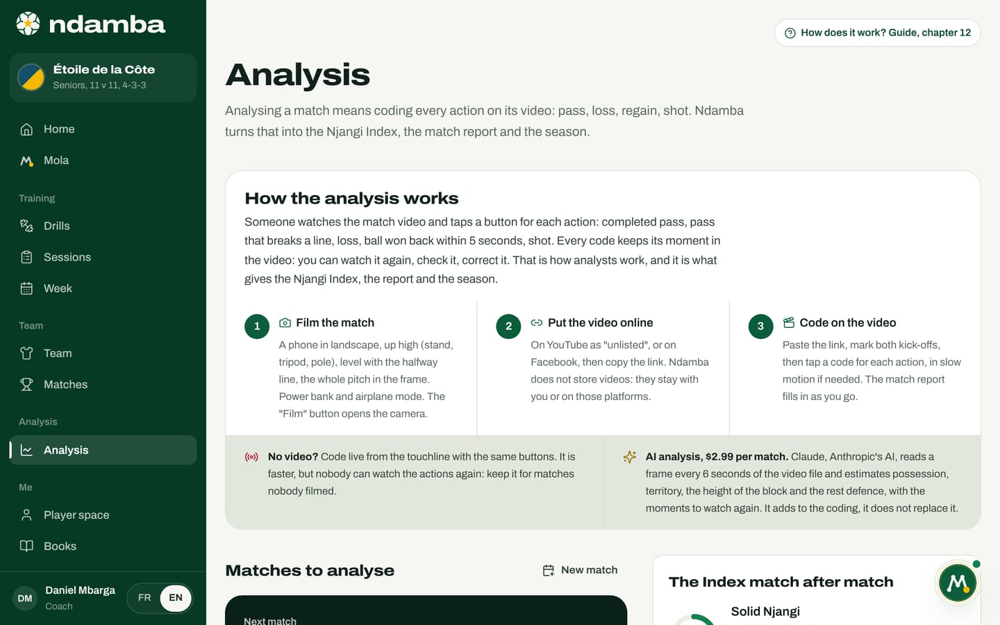
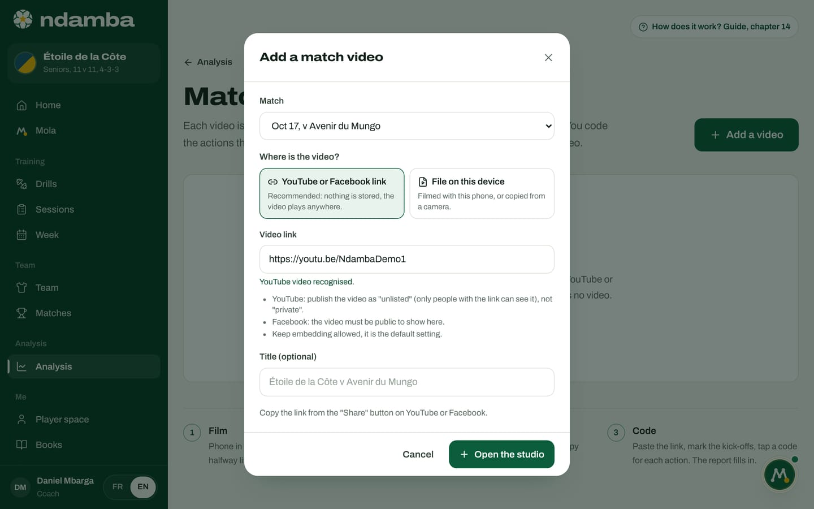
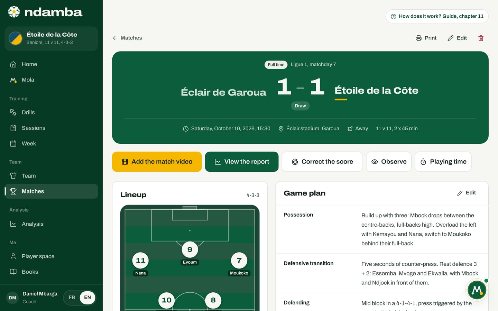
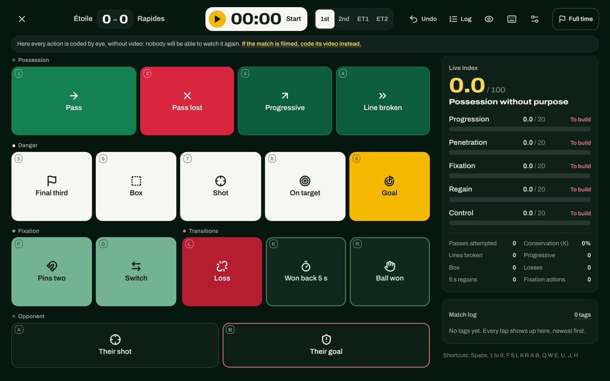
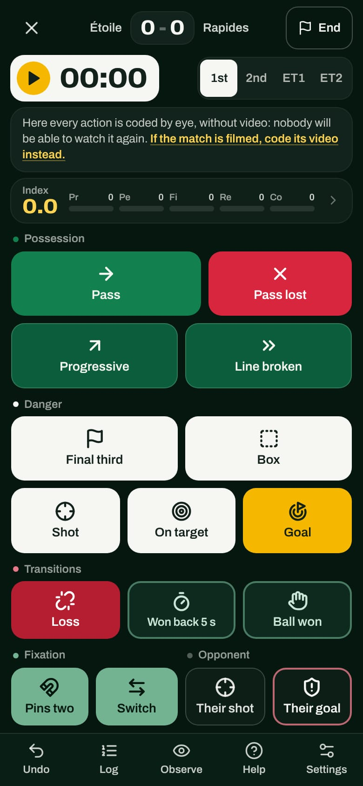

Analysing a match: film, put online, code
What analysing means in Ndamba, and what it uses. Film the match with a phone, put the video on YouTube or Facebook, add it to the match, then code every action on the video with the buttons of the Njangi Code. Live coding from the touchline is still there for matches nobody filmed.
12 min read
In Ndamba, "analysing" has a precise meaning. Someone watches the match and taps a button for each action: a completed pass, a pass that breaks a line, a loss, a regain within five seconds, a shot. Each tap is a code. Ndamba adds the codes up and turns them into the Njangi Index, the match report (chapter 13) and the season (chapter 14). It is the method of the analysis units of professional clubs, with the definitions of the Njangi Code.
So is it all done by hand? Yes, a human codes, and that is on purpose: a human knows what a broken line or a regain is. But they no longer code "by eye" during the match, with no way back. They code on the video: each code keeps its exact moment, so it can be watched again, checked, corrected, slowed down or stepped through frame by frame. An analysis nobody can watch again is not worth much; an analysis on video can be discussed, shown to the players and compared from one match to the next.
Ndamba also offers a paid AI analysis: Claude, Anthropic’s AI, reads frames of the video file and estimates possession, territory, the height of the block and the rest defence, with the moments to watch again (chapter 14). It adds to the coding, it does not replace it.
Three steps: film, put online, code
The Analysis page opens with the How the analysis works panel, which sums up this whole chapter in three numbered steps: Film the match, Put the video online, Code on the video. Below, two reminders: No video? (live coding from the touchline, later in this chapter) and AI analysis, $2.99 per match.


At the top right of every page of the app, the link How does it work? Guide, chapter 12 (the number changes with the page) opens the chapter of this guide that explains the page, in a new tab.
Every upcoming or played match offers two buttons:
- Add the video (or Code the video once it is there): the normal way;
- Live, without video (or Resume live coding): the fallback, for a match nobody films.
The match sheet offers the same choice: Add the match video first, Live, without video next to it.
Film the match
No need for a fixed camera on a mast. A phone is enough, if it is well placed:
- Landscape, never portrait: the pitch is wide.
- Up high: a stand, a changing room roof, a tall tripod, a pole. The higher the camera, the better you read the lines and the distances between players.
- Level with the halfway line, a little back from the touchline.
- The whole pitch in the frame, or at least the full width and two thirds of the length. No zoom following the ball: you want to see the block, not just the ball carrier.
- Power bank and airplane mode: a 90-minute match drains a battery, and a call stops the recording.
- Free storage: a full match in high definition weighs several gigabytes. 720p is enough for coding.
A volunteer parent, an injured player or an assistant can do it. The studio’s Film button opens the phone camera directly (chapter 14): the recorded video opens in the studio straight away.
[!CONSEIL] Film both halves from the same side Leave the phone in the same place for the second half. The teams change ends, the camera does not: coding is simpler, and the AI analysis knows how to swap sides from the second-half kick-off.
Put the video online
Ndamba stores no video. A match weighs gigabytes; hosting them for thousands of teams would cost a fortune and slow everyone down, especially on mobile networks. So the video stays with you, in one of two ways:
- On YouTube, published as "unlisted": only people with the link can see it, and it does not appear in searches. Not "private": a private video shows nowhere but on YouTube. Keep embedding allowed, it is the default setting.
- On Facebook, published as public, on the club page for instance.
Once the video is online, copy its link from the "Share" button. Ndamba keeps only that link. Short links (youtu.be), live streams, Shorts and fb.watch links are recognised.
A third option, without internet: keep the file on this device, the one the phone has just recorded or that you copied from a camera. The file is never sent; you open it again on each visit, because Ndamba does not keep it in memory. It is also the file the AI analysis reads: YouTube and Facebook do not allow downloading their videos, so the AI cannot read a link.
Add the video in Ndamba
From Analysis, the match sheet, an empty report or the Match videos page, the add button opens the Add a match video window:
- Match: already chosen if you came from its row; otherwise pick it. A match that already has its video is greyed out: a match has one video.
- Where is the video?: YouTube or Facebook link (recommended) or File on this device.
- Video link: paste the link. Below the field, YouTube video recognised. or Facebook video recognised. confirms it; a link that is not a video is flagged.
- Title (optional): left empty, it takes the match name, for example "Étoile de la Côte v Avenir du Mungo".


Open the studio creates the video and opens the studio, where you code (chapter 14). A video can also exist without a match, for a training session or scouting an opponent: its codes then stay in the studio and fill no report.
Code on the video
Coding comes down to three gestures, detailed in chapter 14:
- Mark the kick-offs. Put the video on the first-half kick-off and tap Mark here; do the same for the second half. Ndamba works out the match minutes from them: if the second half starts at 55 minutes of video, a code placed at 61 minutes becomes the 52nd minute.
- Play and tap. Play the video and tap a code at the moment of the action, or use the keyboard. When in doubt, go back 5 seconds, slow down to 0.5x, step frame by frame.
- Review. The Clips list takes you back to every action. A wrong code is deleted with one gesture and coded again at the right moment.
Each code goes straight into the match report, with its moment in the video. The report fills in as you go; its goals carry a Watch button that reopens the video at the right place (chapter 13).
The buttons and their codes
The buttons are the same on the video and live. The definitions are those of chapter 32 of the Njangi Code, with no variation.
| Family | Button | Code | Key | When to tap it |
|---|---|---|---|---|
| Possession | Pass | PASS_OK | 1 | Any pass that reaches a teammate |
| Possession | Pass lost | PASS_LOST | 2 | Pass intercepted, overhit or out; it also counts as a loss |
| Possession | Progressive | PROG | 3 | Pass or carry of at least 10 m towards the opponent’s goal |
| Possession | Line broken | LINE | 4 | The ball goes past a line of at least two opponents and reaches a teammate who controls it |
| Danger | Final third | FINAL3 | 5 | Ball controlled in the last 35 metres, once per entry |
| Danger | Box | BOX | 6 | Ball controlled in the opponent’s box |
| Danger | Shot | SHOT | 7 | Any shot, even blocked |
| Danger | On target | SHOT_IN | 8 | A shot the keeper has to deal with, or that goes in |
| Danger | Goal | GOAL | 9 | Goal for us |
| Fixation | Pins two | FIX2 | F | Dribble or carry that draws two opponents, and we keep the ball |
| Fixation | Switch | SWITCH | S | The ball changes side after the block has been drawn |
| Transitions | Loss | LOSS | L | Any loss that is not a pass: duel, dribble, bad first touch |
| Transitions | Won back 5 s | REGAIN5 | K | Ball won back within 5 seconds of a loss |
| Transitions | Ball won | REGAIN | R | Interception, tackle, keeper save, ball given back |
| Opponent | Their shot | SHOT (them) | A | A shot by the opponent |
| Opponent | Their goal | GOAL (them) | B | A goal by the opponent |
| Opponent | Their pass, Their lost pass, Their final third | Q, W, E | For the possession share and the field tilt of the report |
A few rules come up all the time:
- One action, several buttons. A pass that moves the ball 15 metres forward is coded Pass then Progressive. A pass that breaks a line is coded Pass then Line broken, never Progressive as well. A carry forward is coded Progressive or Line broken alone. A switch is coded Pass then Switch.
- One goal, one tap. Goal adds Shot and On target on its own, and On target adds Shot; likewise, Their goal adds Their shot. The score follows the coded goals, but never drops below a score already typed by hand: a match coded in part keeps its real score.
- The 5-second window. After a Loss or a Pass lost, a Ball won coded within 5 seconds counts as Won back 5 s. On the video, Ndamba measures those 5 seconds on the video time; live, a yellow ring counts them down on the button.
Without video: live from the touchline
When nobody films, you can code during the match, from the touchline, with the same buttons. It is faster, but nothing can be watched again: the coder needs a good eye and must keep their head up. The live tagger says so as long as the clock has not started: "Here every action is coded by eye, without video: nobody will be able to watch it again. If the match is filmed, code its video instead."
Open it with Live, without video on the match row in Analysis or on the match sheet.


The live tagger takes the whole screen, with no menus. An upcoming match switches to Live at the latest on the first tap. The cross at the top left (Leave live tagging) takes you back to Analysis; the match stays live and you can resume where you left off.
On the Free plan, as on Player Premium, which does not include the coaching tools, one match can be analysed, on video or live. From the second one, the buttons lead to See plans. A match that already has codes is never locked. Payments are not connected yet: switching on a plan is a demonstration today (chapter 24).


The screen. At the top: the score, the clock, the periods, then Undo, Log, the eye to observe, help, settings and the end button. In the middle, the buttons with their counters. On a big screen, the right-hand column shows the Live Index out of 100, the five sub-indices, eight counters and the Match log. On each tap the button lights up, the phone vibrates if it can, and a message confirms the action with the minute, for example "Pass 12’".
The clock and the periods. Tap the clock at kick-off (Start), then for Pause and Resume. At half time, tap 2nd; the second half starts at the 46th minute of a 2 x 45 match. ET1 and ET2 are for extra time. Past the regular time, a red badge counts the added time ("45+2’"). If the clock was started late, the settings offer Adjust the clock, First half. The clock survives a page reload, and each tag is saved instantly, even offline.
Correct without stopping. Undo removes the last tap with its whole group: undoing a Goal also removes its shots, and the score goes back down. Log lists every tag, period by period; the bin deletes one. The score is corrected in the settings, under Fix the score.
Credit players. After each tap for your team, a Who? strip shows the match numbers for 2.5 seconds. Tap a number to credit the action to that player. These credits fill the Match contribution of the player file (chapter 10) without changing the Index. The Live settings let you turn this strip off, Tag the opponent too and switch to Full screen.


On a phone, hold the screen in portrait: the most frequent buttons are the largest, and the bottom bar gives Undo, Log, Observe, Help and Settings. On a computer, the keyboard is faster:
| Key | Action |
|---|---|
| Space | Start or pause the clock |
| 1 to 9 | Pass, Pass lost, Progressive, Line broken, Final third, Box, Shot, On target, Goal |
| F, S, L, K, R | Pins two, Switch, Loss, Won back 5 s, Ball won |
| A, B | Their shot, Their goal |
| Q, W, E | Their pass, Their lost pass, Their final third (if the opponent is tagged) |
| U, Backspace, Ctrl+Z | Undo the last tag |
| J | Open the log |
| H, ? | Open help |
Finish. At the final whistle, tap the end button (End on a phone), check the score, then End and see the report.
One match, one coding
A match has one coding: on its video, or live. If you coded live and the video arrives afterwards, add it: the studio shows a yellow banner, for example "This match already has 783 codes entered live.", and offers Replace with video coding. The Replace the live coding? window warns that the live codes will be deleted and that the score does not change. Until you confirm, the studio buttons stay inactive: two codings are never mixed, otherwise actions would count twice.
In the Analysed matches list, a small label says how each match was coded: on video or live. The report says so too.
The method
Who codes? Not the head coach during the match: they have a team to lead. On the video, they can code it themselves the next day, or hand the video to an assistant, a volunteer analyst, an injured player. A first full coding takes longer than the match itself; with practice it goes much faster. The Njangi Code advises coding in pairs when possible: one follows the ball (Pass, Pass lost, Loss), the other codes everything else.
What to code first? Build up over a few matches:
- First match: Pass, Pass lost, Loss and Ball won (the 5-second window gives the regains on its own), plus Goal and Their goal.
- Then: Progressive, Line broken, Final third, Box, Shot and On target.
- Finally: Pins two and Switch, which require reading the opposing block, then the opponent (Their pass, Their lost pass, Their final third).
As long as a family is not coded, its sub-indices stay at zero and the Index is lower. That is fine, but only compare matches coded the same way: that is the rule of the Njangi Code, the same method every week.